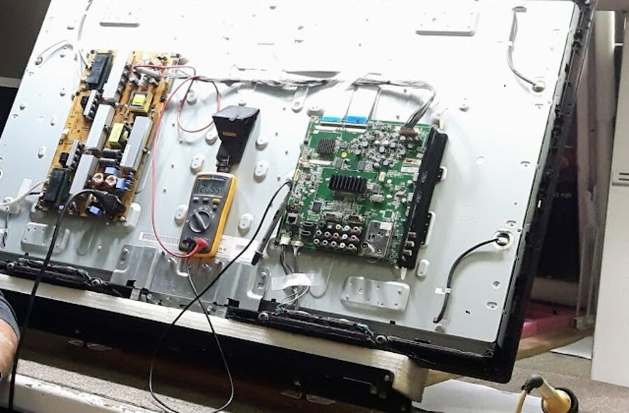

טלוויזיה פתוחהAn open TV
מתוך התמונות של המעבדה.From the lab's own photos.
Poletron, מעבדה לתיקון טלוויזיות ומסכי LED. פנחס לבון 17, קריית ים. Poletron, a repair lab for TVs and LED screens. 17 Pinchas Lavon St, Kiryat Yam.
ספק כוח, לוח ראשי, פסי לד. כל אלה נפתחים על שולחן העבודה. Power board, main board, LED strips. All of it gets opened on the bench.

מתוך התמונות של המעבדה.From the lab's own photos.
כשהם כבים, יש קול ואין תמונה.When they die, there's sound and no picture.
צבע, בהירות ופיקסלים מתים.Colour, brightness, dead pixels.
"אחד הטכנאים הבודדים המתקנים מסכים גדולים באיזור חיפה."
"One of the few technicians who repair large screens in the Haifa area." (translated from Hebrew)
Edi Lipelis
0.0
5.0 מתוך 43 ביקורות5.0 from 43 reviews
"אולג בן אדם הגון, איש מקצוע מצויין עם תודעת שירות גבוהה. אחד הטכנאים הבודדים המתקנים מסכים גדולים באיזור חיפה. הייתה לי תקלה במסך לד סמסונג 75". פניתי לאולג, שלחתי תמונות ונתונים. אולג נתן אבחנה משוערת והצעת מחיר."
"Oleg is an honest man, an excellent professional with a strong sense of service. One of the few technicians who repair large screens in the Haifa area. My 75" Samsung LED screen had a fault. I contacted Oleg and sent photos and details. Oleg gave an estimated diagnosis and a quote." (translated from Hebrew)
"הזמנתי אותו לתיקון טלויזיה. אדם ישר ואדיב, לעיתים נדירות נתקלים באדם כזה ישר, הגון ונעים הליכות. טכנאי מעולה, תמיד קשוב. ממליצה בחום."
"I called him to repair a TV. An honest, kind man; you rarely meet someone so straight, decent and pleasant. An excellent technician who really listens. Warmly recommended." (translated from Hebrew)
"כבר פעם שניה שאני מגיע אליו ומקבל שירות מקצועי, הגון, והמחיר נעים. שירותי ואיכותי מאוד. מומלץ בחום רב!"
"This is the second time I've come to him for service: professional, honest, and a fair price. Very helpful and high quality. Warmly recommended!" (translated from Hebrew)
"אולג הציל אותי בשירות מהיר ומקצועי""Oleg saved me with fast, professional service" (translated)Keren Pollack Cohen
"שירות איכות ברמה באמת גבוהה""Quality service at a really high level" (translated)Yaniv Sosner
"איש מקצוע מצויין עם תודעת שירות גבוהה""An excellent professional with a strong sense of service" (translated)Edi Lipelis
"שירותי ואיכותי מאוד""Very helpful and high quality" (translated)Lavie M
כן. שולחים בוואטסאפ תמונה של המסך ואת פרטי הדגם, וכך אפשר לקבל אבחנה משוערת והצעת מחיר.Yes. Send a photo of the screen and the model details on WhatsApp, and you can get an estimated diagnosis and a quote.
באחת הביקורות כתוב על תיקון מסך לד סמסונג 75 אינץ'. לגבי המסך שלכם, הכי פשוט לשאול את אולג.One review describes the repair of a 75" Samsung LED screen. For your screen, just ask Oleg.
ראשון עד חמישי 11:00–18:45, שישי 11:00–14:00, שבת סגור.Sunday to Thursday 11:00–18:45, Friday 11:00–14:00, closed Saturday.
פנחס לבון 17, קריית ים.17 Pinchas Lavon St, Kiryat Yam.